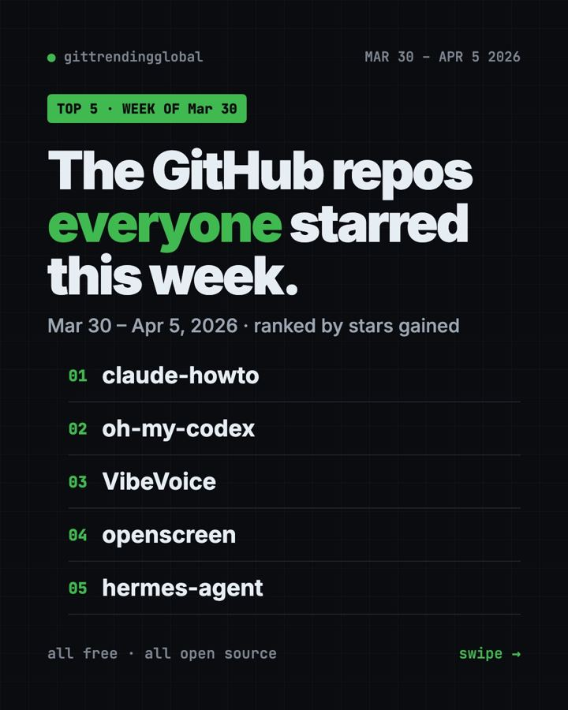

Home › Top repos › GitHub trending this week
Top GitHub Repos, Week of March 30 2026: 5 Free Tools
The top GitHub repos week of March 30 2026: a Claude Code guide, Codex add-ons, Microsoft's VibeVoice, a free demo recorder and Hermes Agent.

The top GitHub repos week of March 30 2026 were a mixed bag in the best way. A picture-heavy Claude Code guide led with about 14,800 new stars. Behind it came Codex add-ons, Microsoft's voice AI, a free screen recorder and a self-improving assistant.
Nobody ran away with this week. The gap from first to fifth was only about 5,000 stars, so there is something here for almost everyone.
Key takeaways
- Claude How To is a free, visual course that takes you from your first Claude Code prompt to advanced tricks.
- oh-my-codex adds teams of helpers, shortcuts and dashboards to OpenAI's Codex.
- VibeVoice is Microsoft's open voice AI. Today it is best known for turning long recordings into text with speaker names.
- OpenScreen made slick product demo videos free. It has since been archived.
- Hermes Agent appeared at number five. One week later it would explode.

Side by side
| Repo | What it does | Best for | Stars this week | License |
|---|---|---|---|---|
| Claude How To | Visual guide to Claude Code | Beginners to power users | +14.8K | MIT |
| oh-my-codex | Add-on layer for Codex | Codex users | +12.1K | MIT |
| VibeVoice | Speech-to-text and voice models | Podcasters, researchers | +11.1K | MIT |
| OpenScreen | Records polished demo videos | Makers, teachers, marketers | +9.9K | MIT |
| Hermes Agent | Personal AI that learns over time | Anyone wanting a helper in chat apps | +9.6K | MIT |
Star gains cover March 30 to April 5, 2026. Totals were checked on GitHub on October 16, 2026.
1. Claude How To: the picture-book guide to Claude Code
Stars: +14.8K this week · about 42K total now
What it is: A free guide full of diagrams, examples and copy-paste templates. It opens with a question many people ask: "You installed Claude Code. Now what?" Then it walks you through memory files, skills, helper agents and more. It comes in English, Vietnamese, Chinese, Ukrainian and Japanese.
Who it's for: Anyone who has tried Claude Code but feels they only use a tenth of it.
Everyday use: Copy its ready-made project memory file so Claude remembers your rules in every chat.
Install it: Read it online at luongnv.com/claude-howto, or grab the templates:
git clone https://github.com/luongnv89/claude-howto.git
cd claude-howto
cp 02-memory/project-CLAUDE.md /path/to/your/project/CLAUDE.md
Or ask your AI helper:
Read github.com/luongnv89/claude-howto and set up its beginner templates in my current project.
2. oh-my-codex: power-ups for OpenAI's Codex
Stars: +12.1K this week · about 34K total now
What it is: Codex is OpenAI's coding helper that runs in your terminal. oh-my-codex, or OMX, sits on top of it. It adds hooks (automatic actions), teams of helper agents and live status screens.
Who it's for: People who already use Codex and want it to handle bigger jobs.
Everyday use: Give Codex a larger task, like tidying a whole website, and let OMX split it among helpers.
Install it: You need Node.js.
npm install -g @openai/codex
npm install -g oh-my-codex
omx doctor
Or ask your AI helper:
Install oh-my-codex from github.com/Yeachan-Heo/oh-my-codex and run omx doctor to check my setup.
3. VibeVoice: Microsoft's open voice AI
Stars: +11.1K this week · about 55K total now
What it is: A family of free voice models from Microsoft. Its speech-to-text model can handle a 60-minute recording in one go. It labels who spoke and when, in over 50 languages. Microsoft removed one text-to-speech model's code after people misused it, but a small real-time voice model is still offered.
Who it's for: Podcasters, students and researchers who need long recordings typed up.
Everyday use: Turn a one-hour interview into a transcript with each speaker named.
Install it: The main path needs an NVIDIA graphics card.
git clone https://github.com/microsoft/VibeVoice.git
cd VibeVoice
pip install -e .
Or ask your AI helper:
Check if my computer can run VibeVoice-ASR from github.com/microsoft/VibeVoice, then transcribe one test file.
See VibeVoice on GitHub · Read our full guide
4. OpenScreen: free demo videos, no watermark
Stars: +9.9K this week · about 40K total now
What it is: A free alternative to Screen Studio, a paid app the README prices at $29 a month. It records your screen and adds smooth zooms that follow your cursor, plus a webcam bubble. There are no paid tiers and no watermark.
Who it's for: Makers, teachers and marketers who record how-to clips.
Everyday use: Record a 60-second walkthrough of your new website for social media.
Install it: On a Mac:
brew install --cask siddharthvaddem/openscreen/openscreen
On Windows: winget install SiddharthVaddem.OpenScreen.
Or ask your AI helper:
Install OpenScreen on this computer and show me how to record a short demo with auto zoom.
⚠️ Heads up: OpenScreen is now archived, so it gets no more fixes. The README points to a community spin-off at github.com/EtienneLescot/openscreen.
5. Hermes Agent: the helper that learns from you
Stars: +9.6K this week · about 254K total now
What it is: A personal AI assistant from Nous Research. It writes itself new skills after hard tasks and remembers what worked. You can chat with it in Telegram, Discord, Slack, WhatsApp, Signal or a terminal, and pick any AI model.
Who it's for: People who want one assistant that follows them across apps.
Everyday use: Ask it on Telegram for a daily summary of your to-do list each morning.
Install it: On Mac or Linux:
curl -fsSL https://hermes-agent.nousresearch.com/install.sh | bash
Or ask your AI helper:
Install Hermes Agent from github.com/NousResearch/hermes-agent and connect it to my Telegram.
See Hermes Agent on GitHub · Read our full guide

Which one should you try first?
- New to Claude Code? Start with Claude How To. It is reading, not risk.
- You live in Codex: add oh-my-codex.
- You have hours of audio: try VibeVoice if you have the hardware.
- You make tutorials: OpenScreen, or its community spin-off.
- You want a helper in your chat apps: Hermes Agent.
💡 Tip: Hermes Agent needs an AI model to think with. Some cost money per use, so check the price before you connect one.
See the whole month in the best GitHub repos of April 2026 and April 2026 AI news. The week before is March 23 to 29; next is April 6 to 12.
FAQ
What were the top GitHub repos the week of March 30, 2026?
Claude How To, oh-my-codex, VibeVoice, OpenScreen and Hermes Agent, in that order by stars gained.
Is OpenScreen still safe to use?
It still works, but it is archived and gets no updates. For fixes, use the community spin-off named in its README.
Can VibeVoice clone voices?
Not in its main code. Microsoft removed the long-form text-to-speech code after misuse. Its focus now is speech-to-text.
What is the difference between Claude Code and Codex?
Both are AI coding helpers that run in a terminal. Claude Code is from Anthropic; Codex is from OpenAI.
Are these tools free?
Yes, all five are free under the MIT license. AI model fees may apply for Hermes Agent and the coding helpers.
Want a new free tool explained every day? Follow @gittrendingglobal on Instagram.
📲 See this as a swipeable post on Instagram
Keep reading

Trending GitHub Repos October 2026: The Top 5 So Far
The trending GitHub repos of October 2026 so far: a free Photoshop-style editor, an AI art studio, a big AI model for gaming PCs and more, explained.

Trending GitHub Repos This Week, Oct 5 2026: The Top 5
Trending GitHub repos this week Oct 5 2026: Matt Pocock's skills, the openGym workout tracker, e2e testing, HyperFrames video and claude-mem memory.

GitHub Trending September 28, 2026: VoiceStudio Takes #1
GitHub trending September 28 2026: VoiceStudio, Hindsight, Paperclip, NVIDIA's OpenShell and a free 542-lesson AI course, with setup steps for each.